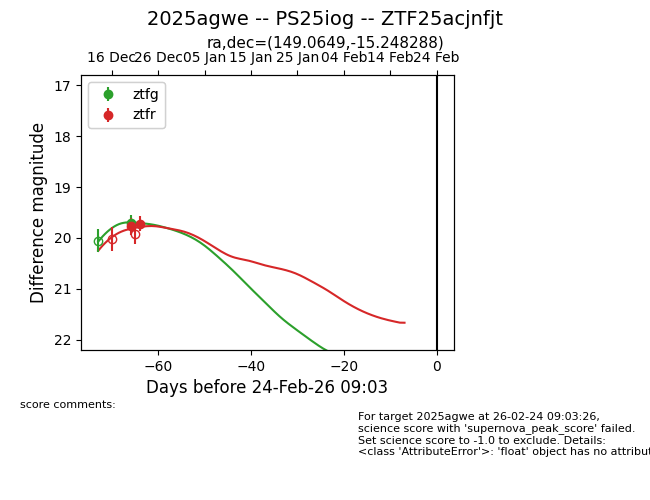
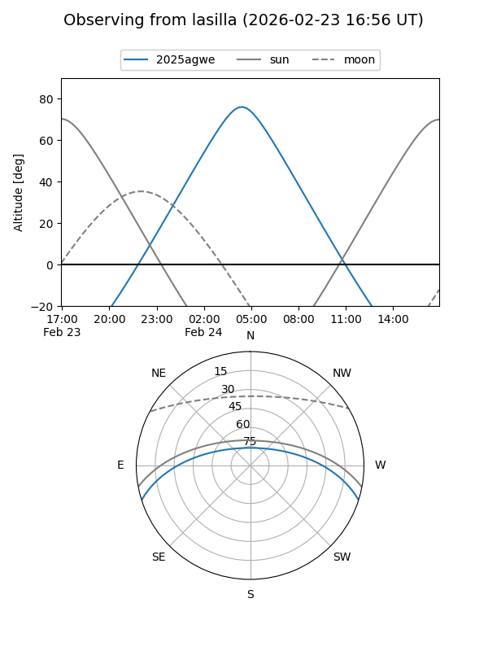
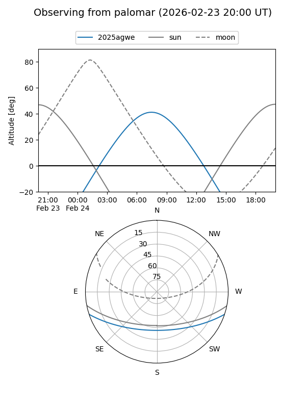
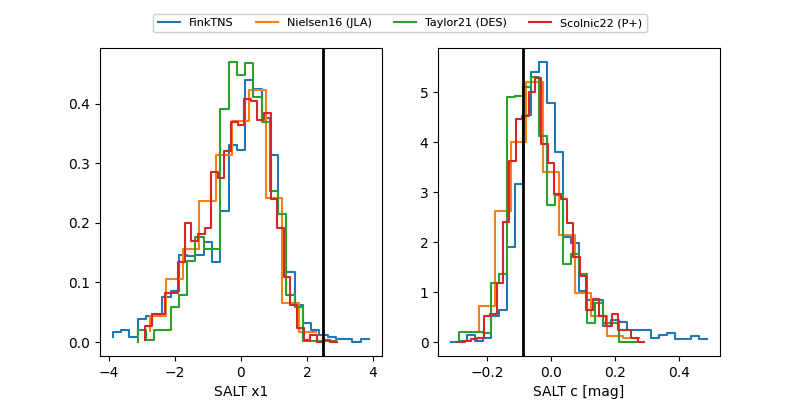

2025agwe
Target 2025agwe at 2026-01-09 12:49
Aliases and brokers:
FINK: link
Lasair: link
ALeRCE: link
TNS: link
YSE: link
alt names
ZTF25acjnfjt (ztf,fink_ztf)
2025agwe (tns,yse)
PS25iog (panstarrs)
Coordinates:
equatorial (ra, dec) = 149.0649,-15.24829
equatorial (HMS+DMS) = 09:56:15.58,-15:14:53.84
galactic (l, b) = (252.4934,+29.99177)
Flags:
Photometry:
last ztfg=19.70, ztfr=19.72
1 ztfg, 2 ztfr detections
Lightcurve

Visibility


Additional plots
